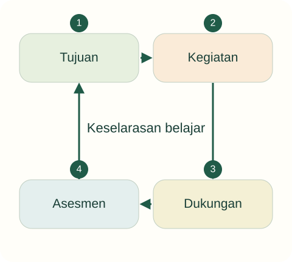
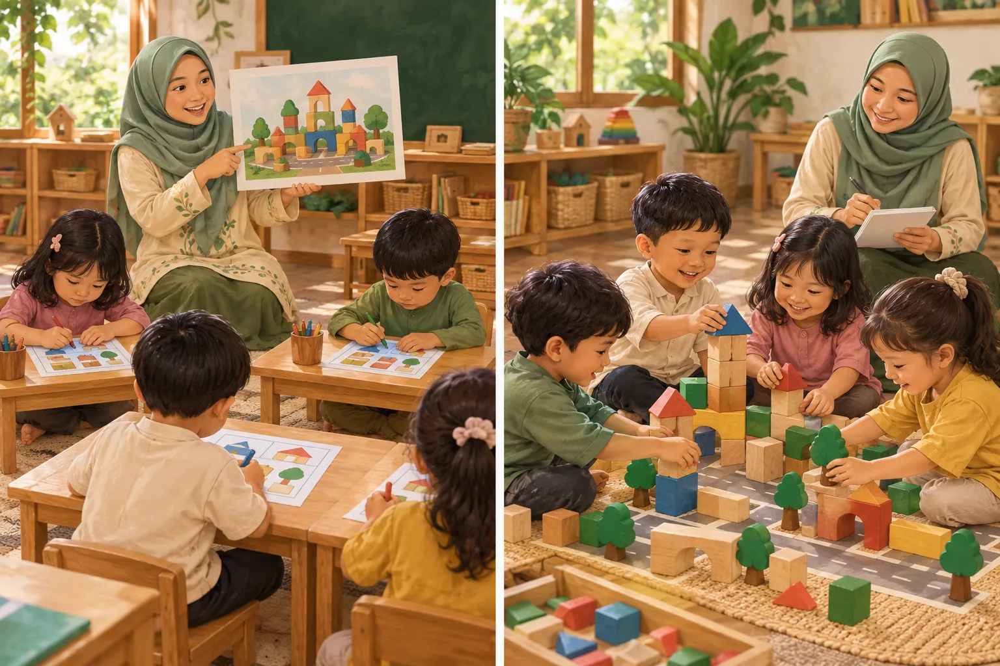

Tujuan pembelajaran
- Memetakan komponen dalam proses pendidikan
- Memeriksa keselarasan tujuan, kegiatan, dan asesmen
- Menggunakan pengamatan untuk menyesuaikan bantuan
Komponen bekerja sebagai satu sistem
Komponen pendidikan meliputi pendidik, peserta didik, tujuan, isi, metode, lingkungan, serta asesmen. Komponen ini saling memengaruhi. Tujuan mengenali hubungan letak, misalnya, perlu didukung oleh isi berupa konsep dekat, jauh, dan di antara. Metode dengan balok memberi peluang memindahkan benda dan membandingkan letak. Ruang kelas perlu menyediakan tempat untuk melihat perubahan susunan. Keberhasilan sistem bergantung pada hubungan antarkomponen tersebut.
Perencanaan dimulai dari kemampuan yang dituju
Permendikdasmen No. 1 Tahun 2026 memberi rujukan mengenai perencanaan, pelaksanaan, dan penilaian proses pembelajaran. Dalam rancangan kelas, tujuan memberi alasan memilih kegiatan. Untuk mengembangkan bahasa ruang, guru dapat meminta anak menempatkan pasar di antara dua rumah lalu menjelaskan letaknya. Jika tujuan utamanya mengombinasikan warna, kegiatan mewarnai dapat dipakai dengan pilihan dan umpan balik yang sesuai. Kegiatan yang sama dapat mendukung tujuan berbeda ketika tuntutan dan bantuan diubah.
Asesmen formatif mengubah tindakan berikutnya
Black dan Wiliam (1998) menempatkan penggunaan informasi untuk menyesuaikan pengajaran dan belajar sebagai ciri kerja formatif. Guru mendengar anak mengatakan “di samping” saat menempatkan pasar “di antara”. Catatan itu dapat ditindaklanjuti dengan membandingkan dua susunan dan meminta anak menunjukkan perbedaannya. Permendikbudristek No. 21 Tahun 2022 memberi rujukan mengenai penilaian hasil belajar. Bedakan pengamatan terhadap perkembangan anak dari penilaian terhadap bagaimana pendidik melaksanakan proses pembelajaran.
Meninjau rancangan dari akses anak
Ketika hanya satu anak memindahkan balok, hasil kelompok memberi informasi terbatas tentang partisipasi setiap anak. Guru dapat menyiapkan peran yang bergilir, menyediakan benda yang mudah diraih, dan memberi kesempatan menjawab dengan menunjuk atau berbicara. Sesudah kegiatan, guru memeriksa siapa yang menggunakan konsep secara mandiri dan siapa yang berpartisipasi setelah diberi contoh. Informasi itu dipakai untuk memilih bantuan berikutnya.
Diagram konsep

Bagaimana mengetahui bahwa rancangan kegiatan benar-benar memberi kesempatan belajar?

Setelah melihat gambar kota, anak diminta mewarnai bangunan pada lembar masing-masing. Guru lain memakai gambar yang sama untuk mengajak kelompok menyusun kota balok dan menghubungkan rumah dengan pasar.
- Siapa yang dapat memindahkan benda pada tiap adegan?
- Di mana anak dapat memperlihatkan relasi letak?
Pembahasan kasus
Jika tujuannya memahami letak, kegiatan kota balok dapat dipakai untuk mengamati tindakan setiap anak. Beri satu instruksi untuk menempatkan benda, pertanyaan tentang alasannya, dan satu susunan baru untuk menguji penerapan.
Buka contoh penalaran setelah mencoba
Pilih satu adegan dan tetapkan cara melihat pemahaman kata “di antara”.
Pada kota balok, beri anak kesempatan menempatkan pasar di antara dua rumah, lalu minta anak menunjukkan letak pada susunan baru.
Latihan terbimbing
Lengkapi urutan untuk kegiatan kota balok: tujuan, isi, tindakan anak, alat, dan bukti. Tentukan perubahan bantuan bila anak masih tertukar antara “di samping” dan “di antara”.
Latihan mandiri
Ambil satu kegiatan PAUD. Jelaskan satu ketidakselarasan antarkomponen, lalu perbaiki rancangan dan tunjukkan cara mengeceknya.
Lihat pembahasan
menyesuaikan bantuan berdasar kesulitan yang terlihat dan mengamati respons berikutnya
Fungsi formatif muncul ketika informasi dipakai untuk memperbaiki langkah belajar.
Refleksi calon pendidik
Bagaimana catatan saya hari ini akan mengubah kegiatan besok?
Catatan hanya disimpan di peramban ini. Tidak dikirim kepada dosen.
Referensi dan bacaan pendamping
- Kementerian Pendidikan Dasar dan Menengah. (2026). Peraturan Menteri Pendidikan Dasar dan Menengah Nomor 1 Tahun 2026 tentang Standar Proses pada Pendidikan Anak Usia Dini, Jenjang Pendidikan Dasar, dan Jenjang Pendidikan Menengah.Menggantikan Permendikbudristek 16/2022. Periksa ruang lingkup dan batang tubuh untuk penerapan kelembagaan.
- Kementerian Pendidikan, Kebudayaan, Riset, dan Teknologi. (2022). Peraturan Menteri Pendidikan, Kebudayaan, Riset, dan Teknologi Nomor 21 Tahun 2022 tentang Standar Penilaian Pendidikan pada Pendidikan Anak Usia Dini, Jenjang Pendidikan Dasar, dan Jenjang Pendidikan Menengah.Rujukan penilaian yang ditemukan dalam penelusuran. Ketentuan penilaian dalam Permendikbud 137/2014 telah dicabut melalui peraturan ini.
- Black, P., & Wiliam, D. (1998). Assessment and classroom learning. Assessment in Education: Principles, Policy & Practice, 5(1), 7–74.Ulasan mengenai penggunaan asesmen untuk memperbaiki pengajaran dan belajar.